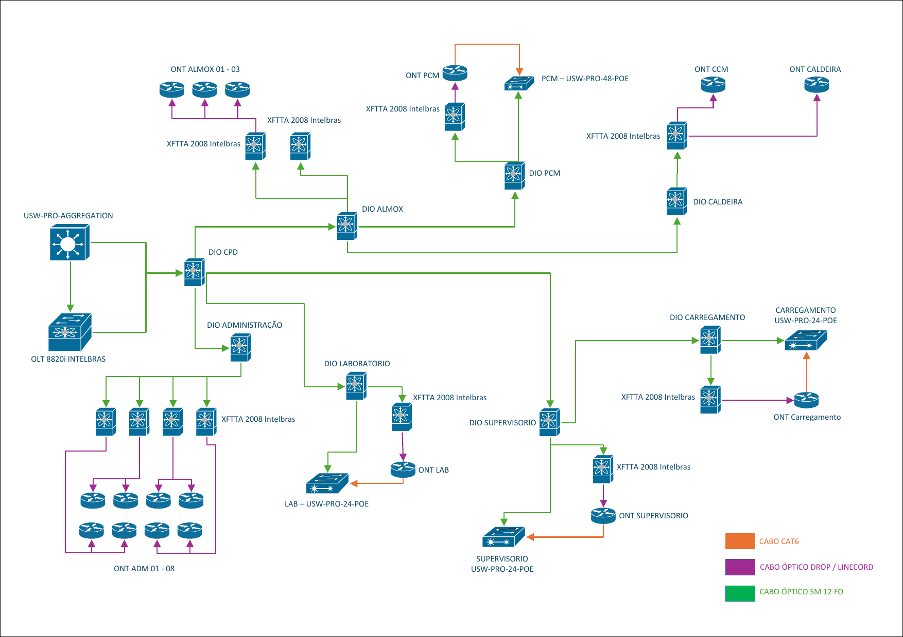

Rede Corporativaem Fibra ÓpticaGPON · 10GbE · LACP
Infraestrutura óptica com OLT Intelbras 8820 I, switch de agregação Ubiquiti no CPD, backbone monomodo de 12 FO e distribuição por caixas XFTTA 2008 com splitter 1x8.
Uma rede óptica pronta para crescer com a empresa
Arquitetura GPON para a distribuição dos pontos remotos e uma camada de agregação Ethernet em 10 Gb/s no CPD, preservando a expansão futura da rede e a padronização dos equipamentos.
Backbone de 12 FO
Cabo óptico monomodo de 12 fibras até cada DIO, com terminação em SC/APC.
Distribuição passiva
Caixas XFTTA 2008 com splitter 1x8 SC/APC e ONTs nos ambientes remotos.
Agregação em 10 Gb/s
Switch Ubiquiti no CPD e dois uplinks de 10 Gb/s em LACP entre a OLT e a agregação.
Expansão preservada
Fibras, pontos nas caixas e portas PON de reserva já previstos na implantação.
O que este projeto contempla
Rede óptica do CPD até a ONT de cada ponto, com a camada de agregação em 10 Gb/s.
8 portas GPON e 2 uplinks SFP+ de 10G, com alimentação A/B redundante
28 portas SFP+ de 10G e 4 SFP28 de 25G no CPD
04 fibras fusionadas e terminadas em SC/APC em cada DIO
Splitter 1x8 SC/APC: 08 pontos ópticos por caixa
Compatíveis com a OLT 8820 I, conforme a topologia

CPD, Almox, PCM, Caldeira, Administração, Laboratório, Supervisório e Carregamento.
11 caixas na prancha. O projeto prevê 12, com uma caixa reserva no Supervisório.
Distribuídas nos setores, uma por ponto representado.
PCM, Laboratório, Supervisório e Carregamento.
GPON na distribuição, 10 Gb/s na agregação
A OLT concentra a rede GPON e o switch de agregação concentra os enlaces ópticos dos switches remotos e a interligação com a OLT.
Distribuição GPON
Núcleo e equipamentos de acesso
A OLT liga-se ao switch de agregação por 02 enlaces ópticos de 10 Gb/s, configurados como um único LAG lógico. VLANs segmentam os serviços e os setores, conforme a política de rede da Binatural.
A rede em números
Cada um com cabo monomodo de 12 FO.
Splitter 1x8 SC/APC em cada caixa.
17 ocupados e 79 de reserva.
2 enlaces de 10G agregados em LACP.
Ocupação dos pontos ópticos
12 XFTTA × 8 pontos = 96 pontos disponíveis. A topologia atual ocupa 17; os demais permanecem identificados como reserva para expansão.
A OLT 8820 I possui 08 portas GPON, com capacidade de até 128 ONTs por porta.
Fibras em cada DIO
Cada DIO recebe 12 FO: 04 são disponibilizadas inicialmente, fusionadas e terminadas em SC/APC, e 08 permanecem em reserva técnica.
| DIO | Cabo | FO em uso | Terminação | FO reserva | Aplicação inicial |
|---|---|---|---|---|---|
| CPD | 12 FO SM | FO01–FO04 | Fusão + SC/APC | FO05–FO12 | Distribuição / origem |
| Almox | 12 FO SM | FO01–FO04 | Fusão + SC/APC | FO05–FO12 | Alimentação das XFTTA do Almox |
| PCM | 12 FO SM | FO01–FO04 | Fusão + SC/APC | FO05–FO12 | XFTTA PCM |
| Caldeira | 12 FO SM | FO01–FO04 | Fusão + SC/APC | FO05–FO12 | XFTTA Caldeira |
| Administração | 12 FO SM | FO01–FO04 | Fusão + SC/APC | FO05–FO12 | 04 XFTTA Administração |
| Laboratório | 12 FO SM | FO01–FO04 | Fusão + SC/APC | FO05–FO12 | XFTTA Laboratório |
| Supervisório | 12 FO SM | FO01–FO04 | Fusão + SC/APC | FO05–FO12 | 02 XFTTA Supervisório |
| Carregamento | 12 FO SM | FO01–FO04 | Fusão + SC/APC | FO05–FO12 | XFTTA Carregamento |
A numeração FO01–FO12 é uma convenção de projeto, mantida na identificação física, nos DIOs e no relatório de certificação. A definição de qual FO atende cada XFTTA segue o levantamento de campo e o orçamento óptico.
Pontos reserva em cada caixa
Cada XFTTA 2008 possui splitter 1x8 SC/APC: 08 pontos por caixa. Os pontos não ocupados ficam identificados como reserva.
| XFTTA | Setor | Pontos / identificação | Disponíveis | Em uso | Reserva |
|---|---|---|---|---|---|
| XFTTA-ALMOX-01 | Almox | ONT Almox 01–03 | 8 | 3 | 5 |
| XFTTA-ALMOX-02 | Almox | Reserva | 8 | 0 | 8 |
| XFTTA-PCM-01 | PCM | ONT PCM | 8 | 1 | 7 |
| XFTTA-CALDEIRA-01 | Caldeira/CCM | ONT CCM + ONT Caldeira | 8 | 2 | 6 |
| XFTTA-ADM-01 | Administração | ONT ADM 01–02 | 8 | 2 | 6 |
| XFTTA-ADM-02 | Administração | ONT ADM 03–04 | 8 | 2 | 6 |
| XFTTA-ADM-03 | Administração | ONT ADM 05–06 | 8 | 2 | 6 |
| XFTTA-ADM-04 | Administração | ONT ADM 07–08 | 8 | 2 | 6 |
| XFTTA-LAB-01 | Laboratório | ONT LAB | 8 | 1 | 7 |
| XFTTA-SUP-01 | Supervisório | ONT Supervisório | 8 | 1 | 7 |
| XFTTA-SUP-02 | Supervisório | Reserva | 8 | 0 | 8 |
| XFTTA-CARG-01 | Carregamento | ONT Carregamento | 8 | 1 | 7 |
| Total | 12 caixas | 17 ONTs | 96 | 17 | 79 |
Switches UniFi preservados
Cada setor com switch recebe 01 ONT GPON e 01 uplink óptico de 10G WDM/BiDi.
| Setor | Switch | ONT GPON | Uplink 10G | LACP | Observação |
|---|---|---|---|---|---|
| PCM | USW-Pro-48-PoE | 01 | WDM/BiDi 10G | Sim* | 2 SFP+ disponíveis no switch |
| Laboratório | USW-Pro-24-PoE | 01 | WDM/BiDi 10G | Sim* | 2 SFP+ disponíveis no switch |
| Supervisório | USW-Pro-24-PoE | 01 | WDM/BiDi 10G | Sim* | 2 SFP+ disponíveis no switch |
| Carregamento | USW-Pro-24-PoE | 01 | WDM/BiDi 10G | Sim* | 2 SFP+ disponíveis no switch |
O LACP só deve ser usado quando os dois enlaces membros terminam no mesmo par lógico de equipamentos. Uma ONT GPON e um enlace WDM 10G direto não entram no mesmo LAG. Para manter 01 ONT + 01 uplink 10G no switch, a ONT atua como enlace de contingência (STP/failover) ou, preferencialmente, adotam-se 02 enlaces 10G para o mesmo domínio de agregação. O LACP está plenamente indicado nos 02 × 10G entre a OLT 8820 I e o USW-Pro-Aggregation.
Núcleo com enlaces e alimentação redundantes
OLT e switch de agregação ficam no CPD, interligados por dois enlaces de 10 Gb/s em LACP.
| Equipamento | Qtd. | Interface | Função | Dimensionamento |
|---|---|---|---|---|
| Intelbras OLT 8820 I | 1 | 8 × GPON + 2 × SFP+ 10G | Concentração GPON | 8 portas PON · até 128 ONTs por porta |
| Ubiquiti USW-Pro-Aggregation | 1 | 28 × SFP+ 10G + 4 × SFP28 25G | Agregação do CPD | Alta densidade e expansão para 25G |
| Enlace OLT ↔ Aggregation | 2 | 10G SFP+ | Uplink redundante em LACP | 20 Gb/s agregados |
| Fontes para a OLT | 2 | 48 Vdc redundante | Alimentação A/B | Alimentação independente · AC via fontes externas |
A OLT 8820 I utiliza alimentação de 43–59 Vdc com entradas duplas e redundantes. Para atender ao requisito de duas fontes AC redundantes, o projeto usa duas fontes AC→48 Vdc independentes, preferencialmente em circuitos ou UPS distintos, ligadas às duas entradas DC da OLT.
GPON frente às alternativas
| Critério | Cat6 | Ethernet P2P | GPON | XGS-PON | Avaliação para a Binatural |
|---|---|---|---|---|---|
| Meio | Cobre | Fibra | Fibra passiva | Fibra passiva | Fibra é preferível para backbone e ambientes distribuídos |
| Arquitetura | Ponto a ponto | Ponto a ponto | Ponto-multiponto | Ponto-multiponto | GPON reduz portas e ópticos necessários |
| Capacidade típica | 1 GbE | 10/25/40G | 2,488G down / 1,244G up por PON | 10G simétrico | GPON atende o cenário atual; XGS-PON é evolução futura |
| Eletrônica remota | Alta | Alta | Somente ONT | Somente ONU/ONT | GPON reduz equipamentos ativos no caminho |
| Energia nos trechos | Necessária | Não no enlace óptico | Não no trecho passivo | Não no trecho passivo | Menor dependência de energia intermediária |
| Expansão | Baixa/média | Alta | Alta | Muito alta | GPON oferece grande margem de expansão |
| Custo operacional | Maior em longos trechos | Maior | Baixo | Baixo/médio | GPON tende a ser mais eficiente |
Vantagens para a Binatural
Alta densidade
A OLT 8820 I possui 08 portas GPON, com até 128 ONTs por porta.
Margem para ativações
A rede atual usa somente as 17 ONTs da topologia.
Arquitetura passiva
Menos equipamentos ativos entre o CPD e os pontos remotos.
Fibras disponíveis
12 FO por DIO para crescimento, contingência e novos serviços.
79 pontos de reserva
Cada XFTTA 2008 entrega 08 saídas, nas 12 caixas previstas.
Agregação 10G e 25G
Camada de concentração preparada para aumento de tráfego.
Padronização
Switches UniFi existentes com SFP+ 10G e suporte a LACP.
Segmentação por VLAN
Dados corporativos, CFTV, voz, automação, visitantes e outros serviços.
Imunidade eletromagnética
A fibra óptica é ideal para o cenário industrial da Binatural.
Crescimento sem trocar o backbone
A infraestrutura passiva e de agregação já é implantada dimensionada para o crescimento, usando as fibras reservas dos DIOs, as portas reservas das XFTTAs e as portas PON remanescentes da OLT.
Implantação
17 ONTs e as caixas XFTTA 2008 conforme a topologia atual.
Crescimento
Ativação dos pontos reservas nas XFTTA e das fibras reservas dos DIOs.
Capacidade
Uso das demais portas GPON da OLT e novos enlaces 10G na agregação.
Evolução tecnológica
Migração seletiva para XGS-PON, preservando a fibra e a camada de agregação.
79 pontos livres nas caixas, FO05–FO12 em reserva técnica em cada DIO e portas PON remanescentes na OLT.
O que se valida antes da execução
Distâncias e orçamento óptico
Levantamento das distâncias reais CPD → DIO → XFTTA e cálculo do orçamento óptico de cada enlace.
Local dos DIOs
Confirmação de que cada DIO será instalado em ambiente interno e protegido.
Identificação das fibras
Identificação física FO01–FO12 em todos os DIOs, com documentação de origem e destino.
Certificação
OTDR e medição de potência óptica após as fusões e terminações.
Ópticos e compatibilidade
Tipos de SFP/SFP+ e compatibilidade WDM/BiDi entre cada switch e o equipamento de destino.
Desenho de LACP
Definição formal, sem misturar ONT GPON e enlace WDM 10G de destinos lógicos diferentes no mesmo LAG.
Rede lógica
Definição das VLANs, endereçamento IP, QoS, STP/RSTP e políticas de gerenciamento.
Energia do CPD
Fontes AC→48 Vdc redundantes, UPS, aterramento e proteção contra surtos.
Do lançamento dos cabos à rede certificada
Serviços executados por equipe técnica especializada, com ativação por setor para não afetar a rotina da planta.
Levantamento
Rotas, distâncias, orçamento óptico e projeto executivo.
Cabos ópticos
Lançamento dos cabos monomodo de 12 FO até os DIOs.
DIOs e fusões
Montagem dos 8 DIOs, fusões e terminação em SC/APC.
Caixas e ONTs
Instalação das XFTTA 2008 e dos drops até as ONTs.
Rack do CPD
OLT, switch de agregação, fontes 48 Vdc e cordões identificados.
Configuração
OLT, ONTs, VLANs e LACP entre OLT e agregação.
Certificação
OTDR nas fibras e medição de potência óptica.
Entrega
Documentação, treinamento da equipe e operação assistida.
Limites do escopo
Itens que ficam fora desta proposta e condições de prazo e suporte da implantação.
Itens não contemplados
- Fornecimento de nobreaks e dos switches de acesso existentes
- Obras civis, dutos, postes e adequações elétricas estruturais
- Firewall, link de internet e plano de endereçamento da rede
- Cabeamento metálico interno além da ligação ONT–switch
- Licenças de software não previstas
- Manutenção mensal recorrente
Prazo de execução
Definido após a aprovação da proposta, o levantamento em campo, o prazo de entrega dos equipamentos e a liberação das áreas pela unidade.
Suporte e garantia
- Suporte presencial e remoto por 90 dias após a entrega final
- Garantia dos equipamentos conforme condições de cada fabricante
Materiais fornecidos
| Qtd | Item | Especificação | Unitário | Total |
|---|
Serviços de implantação
Executados por equipe técnica especializada, do levantamento à rede certificada.
| Serviço | Descrição | Valor |
|---|
Investimento da solução
Fornecimento dos materiais da planilha e serviço de instalação, configuração e certificação da rede óptica para a Binatural .
O serviço de instalação e configuração conta com suporte presencial e remoto durante 90 dias após a entrega final. A A+.com permanece à disposição para esclarecimentos técnicos e eventuais adequações necessárias.
Condições de pagamento:
(61) 3358-6941 / 9248-0219
Proposta válida por
Obrigado
OLT Intelbras 8820 I, USW-Pro-Aggregation, backbone de 12 FO e XFTTA 2008: uma infraestrutura modular, com baixa necessidade de eletrônica intermediária e ampla capacidade de expansão para a Binatural, .
Projeto e implantação A+.com Engenharia e Tecnologia.